1024 H101 戶外相調 行程總覽
- 0800 一會所出發
- 0900~1000 三坑自然生態公園、
- 1020~1140 十一份觀光文化園區
- 1200~1340 活魚午餐、大平紅橋
- 1400~1500 石門水庫、壩頂散步
- 1530~1600 甜蜜蜜、伴手禮
- 1700 抵達一會所
景點介紹
三坑自然生態公園
三坑自然生態公園座落在桃園市龍潭區，鄰近石門水庫與大漢溪畔，園區面積約 7 公頃，以生態湖與廣闊大草坪為主軸。周邊景致靜謐，湖光山色交相映照，是兼具賞景、休閒與生態觀察的理想去處。
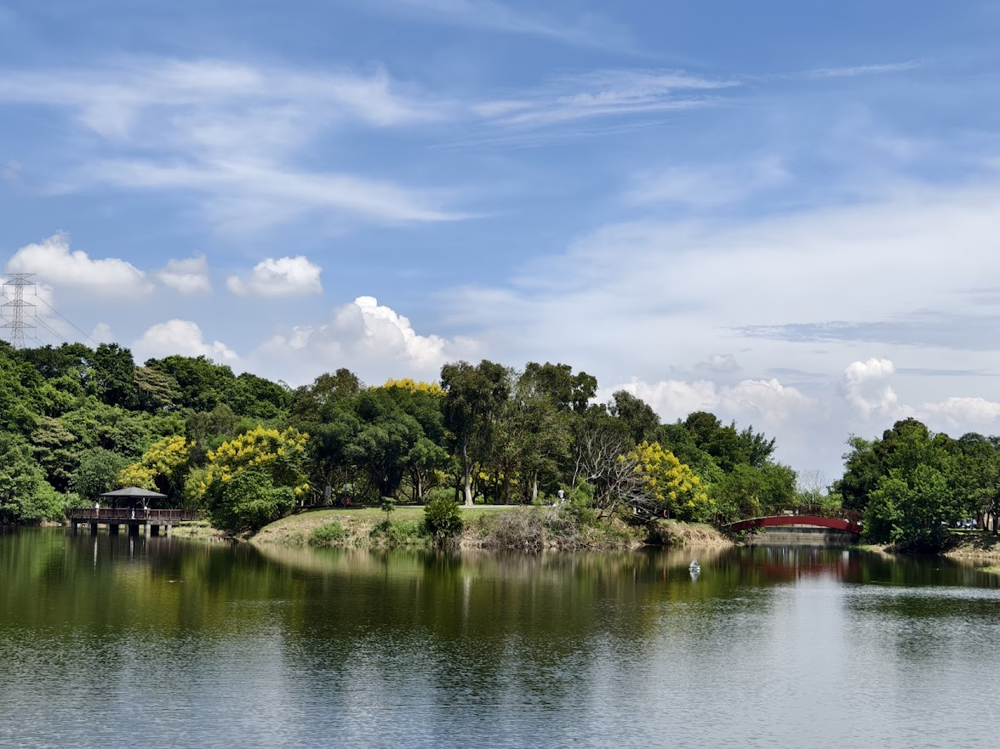 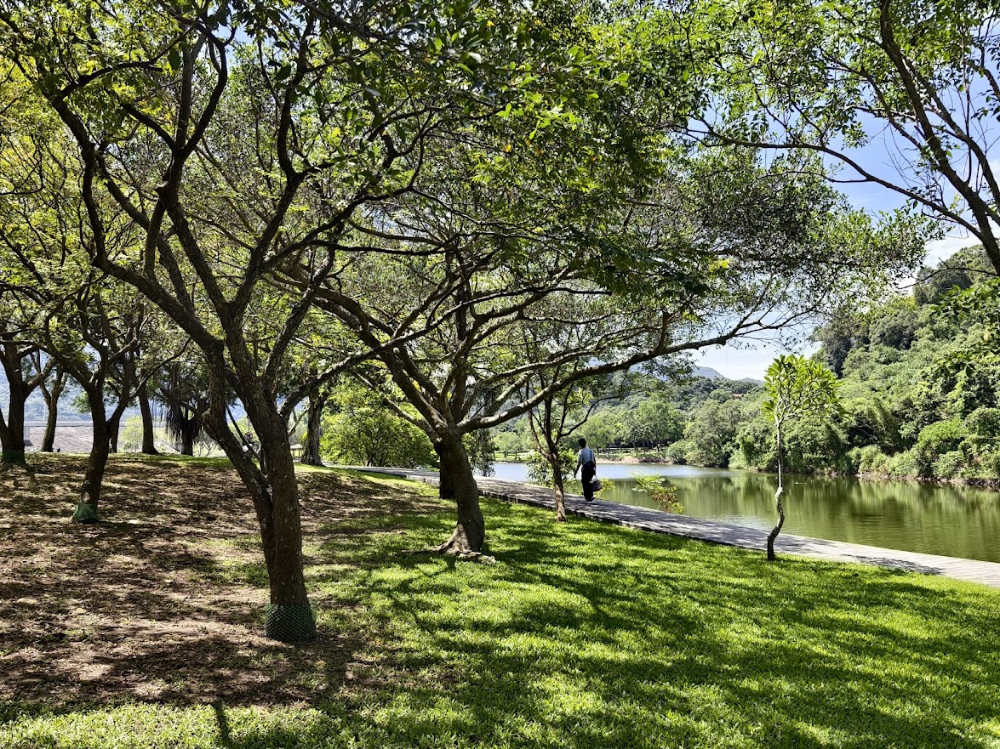 更多照片十一份觀光文化園區
十一份觀光文化園區以「桃園給世界的十一份禮物 11 GIFTS FOR WORLD」為使命，把位於石門水庫旁的老宿舍群整理成數個藝文空間，推廣聯合國永續發展的目標。館內設有美術館，免費參觀；著名的十一份豆花，千萬不要錯過。
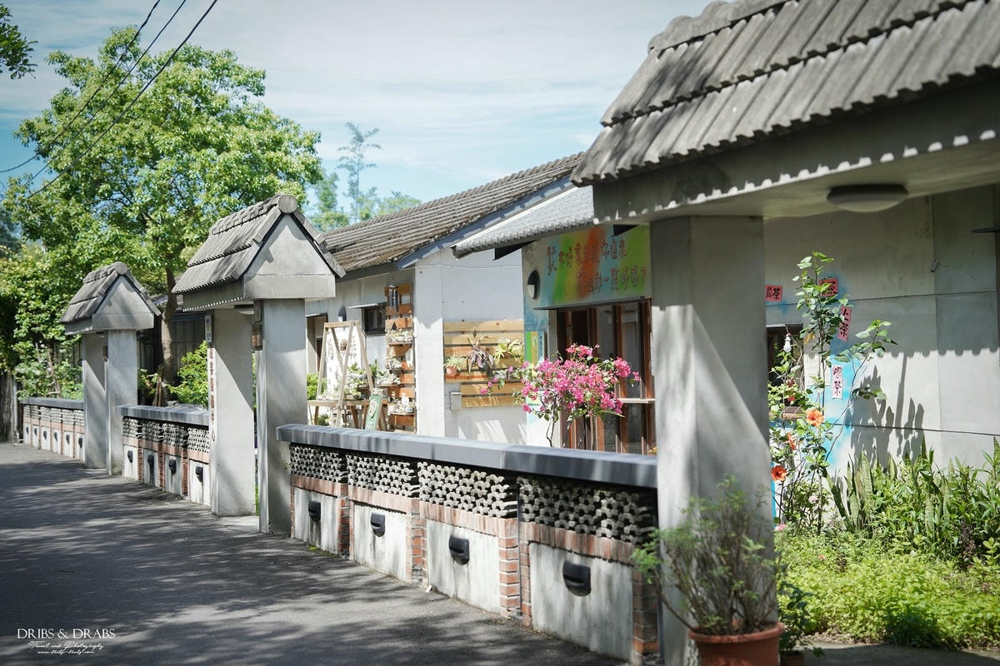 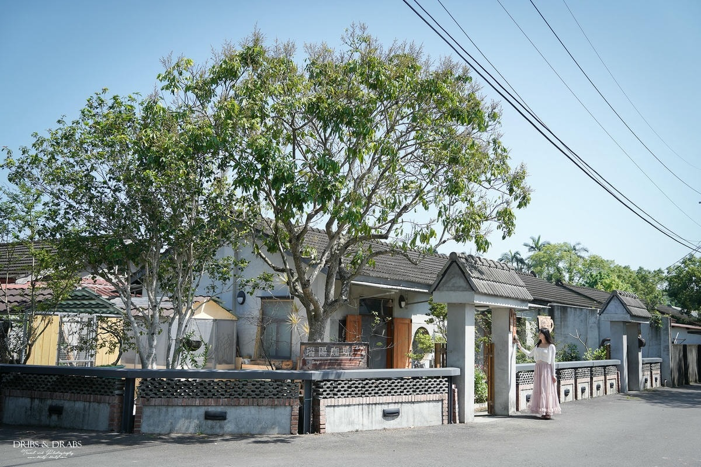 更多照片
更多照片
石門大草坪 & 流蘇
龍潭區的水利署北區水資源分署（舊稱石管局）前大草坪及周邊龍潭十一份園區，總共栽種 84顆流蘇。由於流蘇花淡雅潔白似雪，略有淡淡香氣，4月開花如傘般樹上堆積層層雪白花，有「四月雪」之名，古時曾是文人雅士吟詠題材。
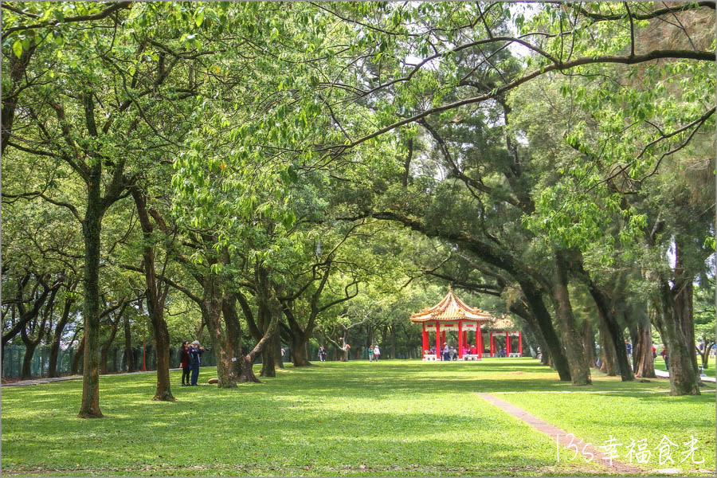 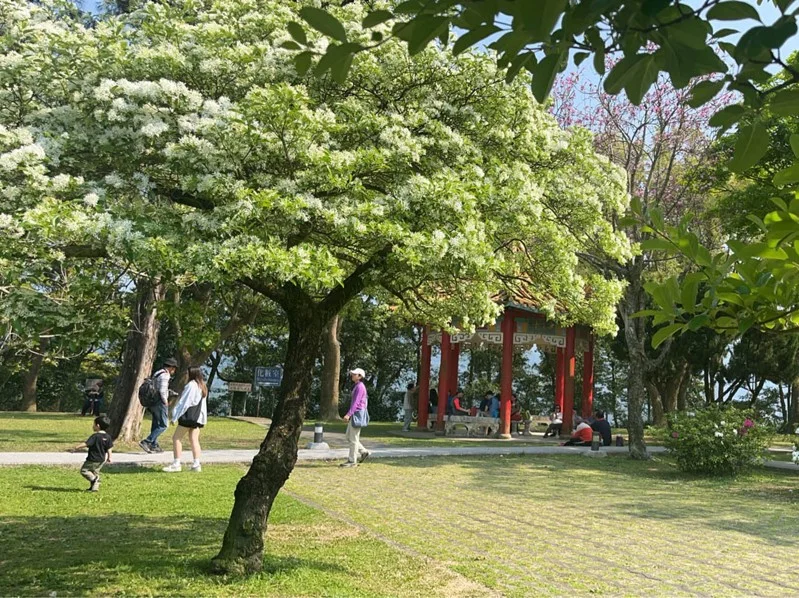石管局宿舍群 & 櫻花
龍潭十一份周邊保留了過去興建石門水庫時美國工程師住的宿舍群，是融合日式和美式風格的50年老建築.宿舍群周邊植有許多櫻花樹，每逢春季櫻花綻放，美不勝收。
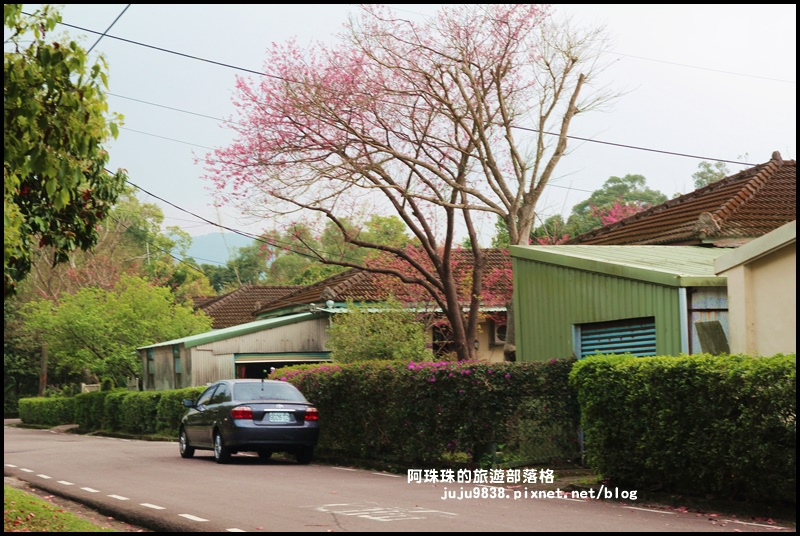 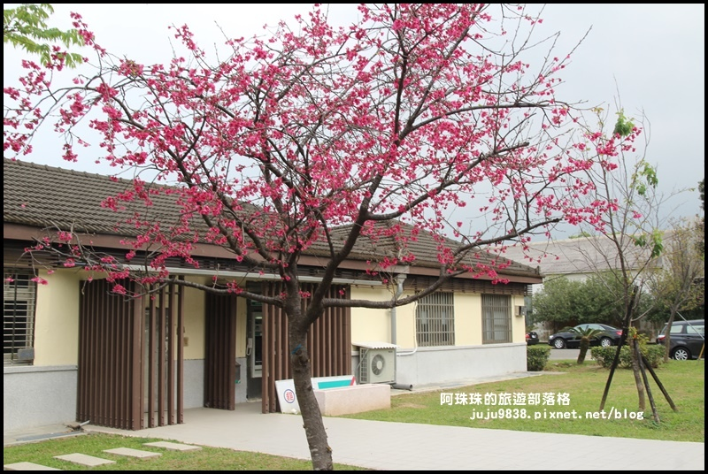大平紅橋
日治時期 1923 年建造之紅磚糯米橋，曾入選台灣歷史建築百景；五座優雅橋拱跨越打鐵坑溪，近年規劃為親水公園。
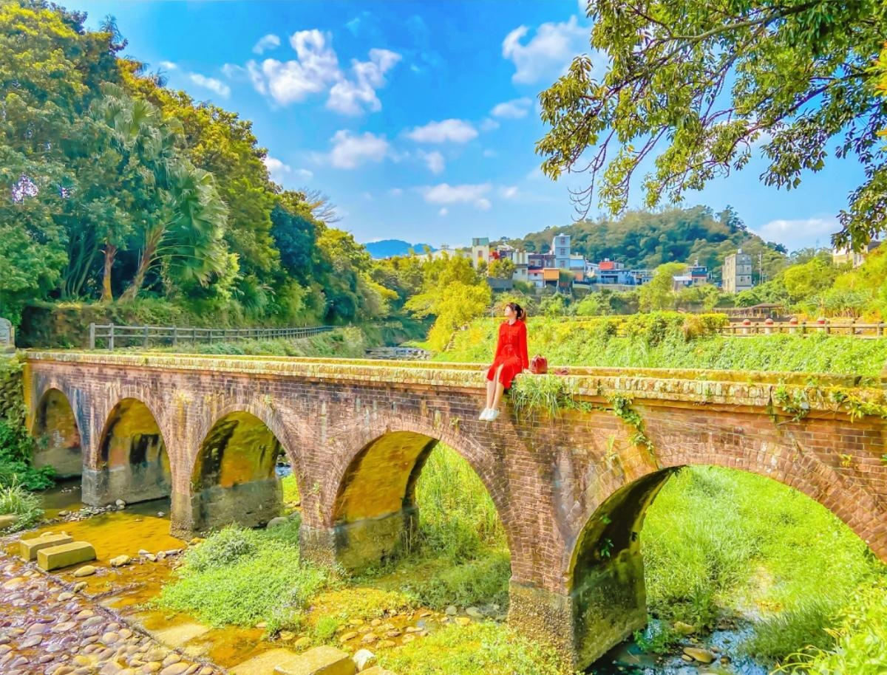 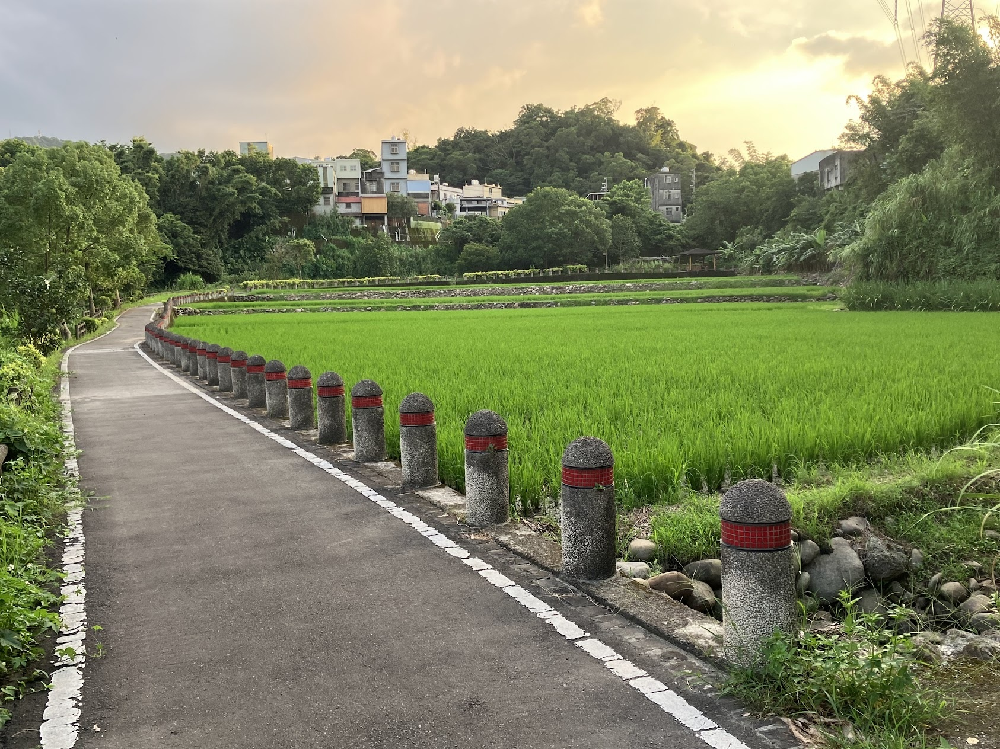 更多照片石門水庫
- 依山閣：位於大壩西側，一樓為石門水文化館與旅遊諮詢、二樓為餐廳、三樓為觀景平台，前方水漾廣場視野遼闊。 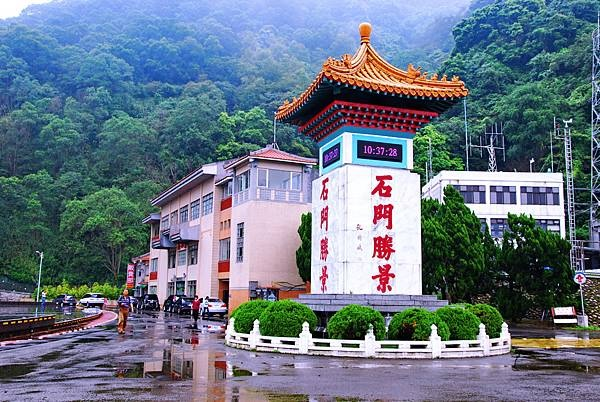
- 石門水文化館：以 Tiffany Blue 視覺與互動展敘述石門水庫一甲子、桃園台地 300 年水資源等主題，含水庫模型與 AR 展示，有冷氣／座位，很適合中午後的休息與教育導覽。 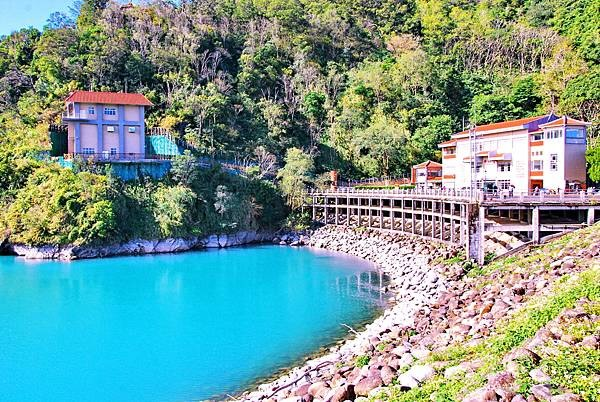
- 壩頂散步：可登嵩台/觀洪平台俯瞰 S 型壩頂大道與溢洪道或沿園區步道輕鬆走。 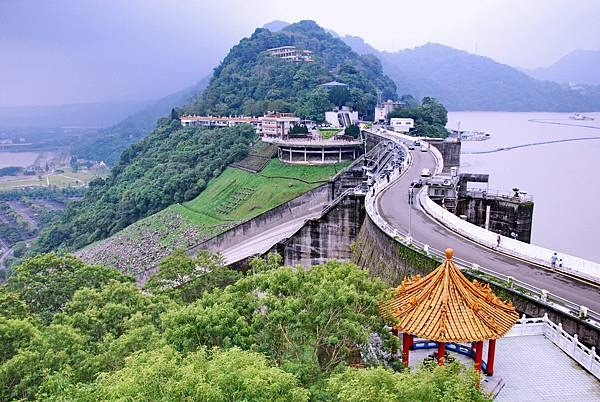 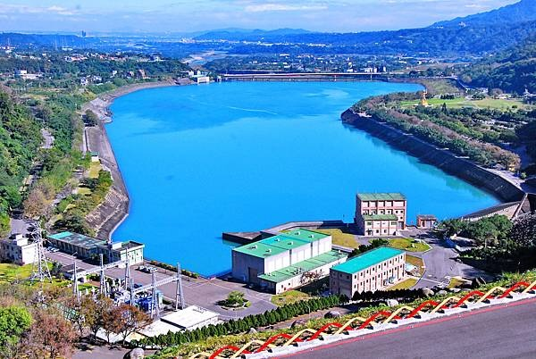